X1–X19¶
Classical & Ancient Centers
The foundational centers of classical triangle geometry: the incenter, centroid, circumcenter, orthocenter, nine-point center, symmedian point, Gergonne, Nagel, Mittenpunkt, Spieker, Feuerbach, Fermat, isodynamic, Napoleon, and Clawson points.
X1–X19 (Classical & Ancient Centers) — Complete 19-center constellation constructed on acute reference triangle \((a, b, c) = (5, 6, 7)\) with unit baseline AB = \(1\).¶
See also
Companion Topic Guides: Collection 1 Topics: Conjugacies, Central Lines, Circles & Triangles (\(T_1\)–\(T_{24}\))
X1INCENTER
X1 is the point of concurrence of the interior angle bisectors of ABC; the point inside ABC whose distances from sidelines BC, CA, AB are equal. This equal distance, r, is the radius of the incircle, given by \(r = 2 \operatorname{area}(ABC)/(a + b + c)\).
X2CENTROID
X2 is the point of concurrence of the medians of ABC, situated 1/3 of the distance from each vertex to the midpoint of the opposite side. More generally, if L is any line in the plane of ABC, then the distance from X2 to L is the average of the distances from A, B, C to L. An idealized triangular sheet balances atop a pin head located at X2 and also balances atop any knife-edge that passes through X2. The triangles BXC, CXA, AXB have equal areas if and only if X = X2.
X3CIRCUMCENTER
X3 is the point of concurrence of the perpendicular bisectors of the sides of ABC. The lengths of segments AX, BX, CX are equal if and only if X = X3. This common distance is the radius of the circumcircle, which passes through vertices A, B, C. Called the circumradius, it is given by \(R = a/(2 \sin A) = abc/(4 \operatorname{area}(ABC))\).
X4ORTHOCENTER
X4 is the point of concurrence of the altitudes of ABC.
X5NINE-POINT CENTER
X5 is the center of the nine-point circle. Euler showed in that this circle passes through the midpoints of the sides of ABC and the feet of the altitudes of ABC, hence six of the nine points. The other three are the midpoints of segments A-to-X4, B-to-X4, C-to-X4. The radius of the nine-point circle is one-half the circumradius.

X6SYMMEDIAN POINT (LEMOINE POINT, GREBE POINT)
X6 is the point of concurrence of the symmedians (i.e., reflections of medians in corresponding angle bisectors). X6 is the point which, when given by actual trilinear distances x,y,z, minimizes \(x^{2}\) + \(y^{2}\) + \(z^{2}\).
X7GERGONNE POINT
Let Ta, Tb, Tc denote the points in which the incircle meets the sides BC, CA, AB, respectively. The lines ATa, BTb, CTc concur in X7.
X8NAGEL POINT
Let NaNbNc be the points in which the A-excircle meets BC, the B-excircle meets CA, and the C-excircle meets AB, respectively. The lines ANa, BNb, CNc concur in X8. Another construction of Na is to start at A and trace around ABC half its perimeter, and similarly for Nb and Nc. Also, X8 is the incenter of the anticomplementary triangle.
X9MITTENPUNKT
X9 is the symmedian point of the excentral triangle.
X10SPIEKER CENTER
The Spieker circle is the incircle of the medial triangle; its center, X10, is the centroid of the perimeter of ABC.
X11FEUERBACH POINT
X11 is the point of tangency of the nine-point circle and the incircle. The nine-point circle is the circumcenter of the medial triangle, as well as the orthic triangle. Feuerbach’s famous theorem states that the nine-point circle is tangent to the incircle and the three excircles.
X12{X1,X5}-HARMONIC CONJUGATE OF X11
Let A'B'C' be the touch points of the nine-point circle with the A-, B-, C- excircles, respectively. The lines AA', BB', CC' concur in X12.
X131st ISOGONIC CENTER (FERMAT POINT, TORRICELLI POINT)
Construct the equilateral triangle BA'C having base BC and vertex A' on the negative side of BC; similarly construct equilateral triangles CB'A and AC'B based on the other two sides. The lines AA', BB', CC' concur in X13. If each of the angles A, B, C is < 2π/3, then X13 is the only center X for which the angles BXC, CXA, AXB are equal, and X13 minimizes the sum |AX| + |BX| + |CX|. The antipedal triangle of X13 is equilateral.
X142nd ISOGONIC CENTER
Construct the equilateral triangle BA'C having base BC and vertex A' on the positive side of BC; similarly construct equilateral triangles CB'A and AC'B based on the other two sides. The lines AA',BB',CC' concur in X14. The antipedal triangle of X14 is equilateral.
X151st ISODYNAMIC POINT
Let U and V be the points on sideline BC met by the interior and exterior bisectors of angle A. The circle having diameter UV is the A-Apollonian circle. The B- and C- Apollonian circles are similarly constructed. Each circle passes through one vertex and both isodynamic points. (This configuration, based on the cevians of X1, generalizes to arbitrary cevians; see TCCT, p. 98, problem 8.)

X162nd ISODYNAMIC POINT
Let U and V be the points on sideline BC met by the interior and exterior bisectors of angle A. The circle having diameter UV is the A-Apollonian circle. The B- and C- Apollonian circles are similarly constructed. Each circle passes through a vertex and both isodynamic points. The pedal triangle of X16 is equilateral.
X171st NAPOLEON POINT
Let Napa, Napb, Napc be the centers of the equilateral triangles in the construction of X13. The lines ANapa, BNapb, CNapc concur in X17.
X182nd NAPOLEON POINT
Let Napa, Napb, Napc be the centers of the equilateral triangles in the construction of X14. The lines ANapa, BNapb, CNapc concur in X18.
X19CLAWSON POINT
X19 is the homothetic center of the orthic and extangents triangles. The Ayme triangle, constructed at X3610, is perspective to ABC with perspector X19.